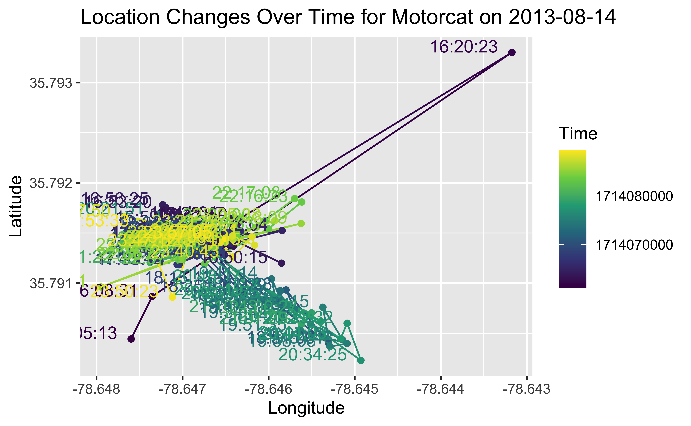
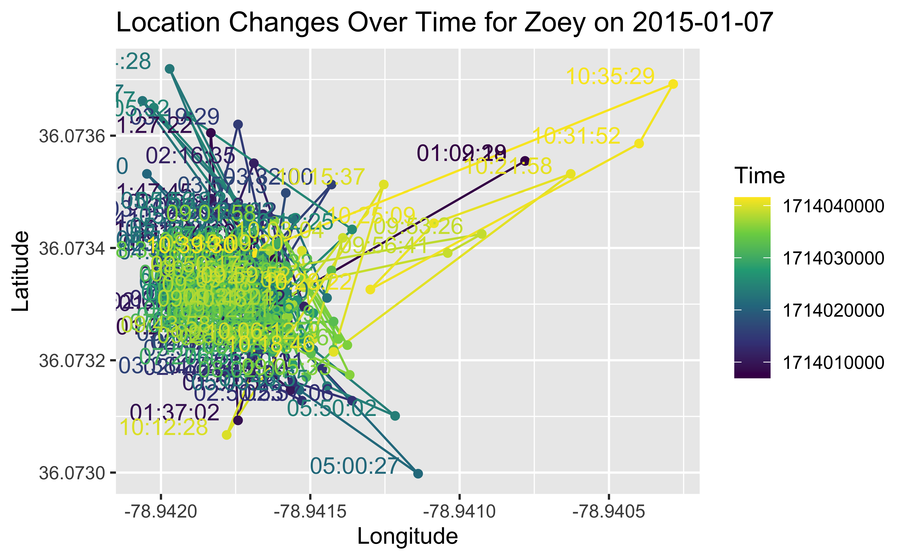
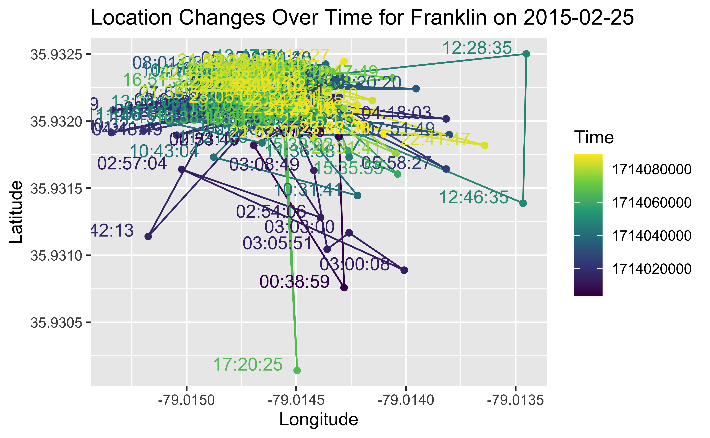
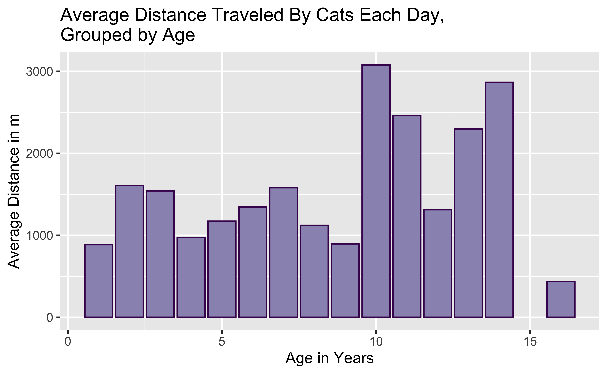
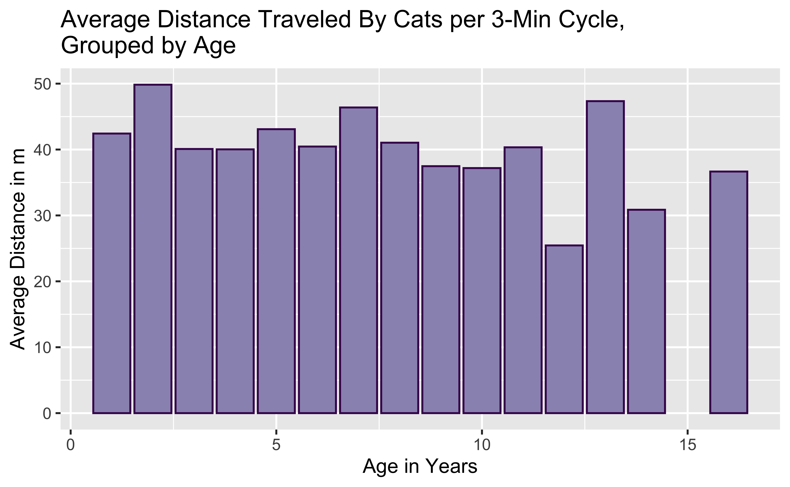
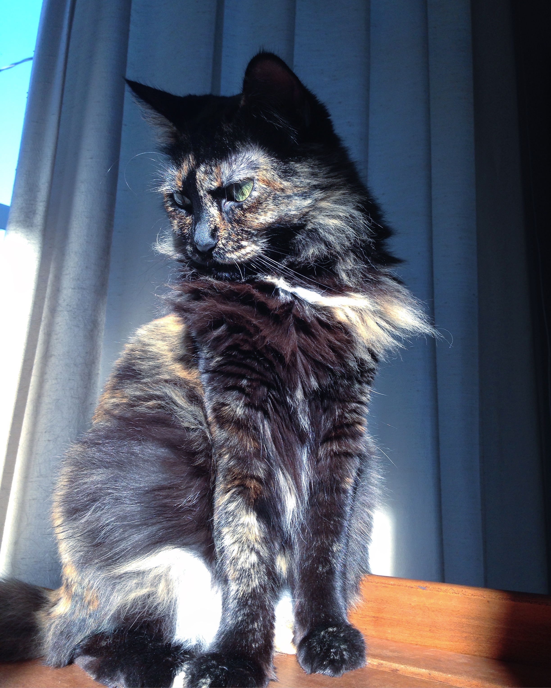

#Tidying up the date and time variables in both dataframes
cat_movement <- cat_movement %>%
mutate(Time = format(as.POSIXct(timestamp),
format = "%H:%M:%S"),
Date = as.Date(timestamp)) %>%
filter(visible) %>%
subset(select = -timestamp)
cat_reference <- cat_reference %>%
mutate(`Date-Deploy-On` = as.Date(`deploy-on-date`),
`Time-Deploy-On` = format(as.POSIXct(`deploy-on-date`),
format = "%H:%M:%S"),
`Date-Deploy-Off` = as.Date(`deploy-off-date`),
`Time-Deploy-Off` = format(as.POSIXct(`deploy-off-date`),
format = "%H:%M:%S")) %>%
subset(select = -`deploy-off-date`) %>%
subset(select = -`deploy-on-date`)
#ordering data alphabetically by animal id
cat_reference <- cat_reference[order(cat_reference$`animal-id`), ] The Cat’s Meow: Tracking Outdoor Cat Movement over Time
Final Project / MATH241 / Spring 2024
So, What is a Cat?
Data
Two datasets
cat_us: GPS coordinates & timestamps of 140+ cats from the United States from 2013-2016
cat_us_reference: metadata on individual cat lifestyles (sex, age, diet, hunting, number of cat siblings) and data collection metadata
Data collected by volunteer cat owners from 12 geographically diverse US states
Initially used to analyze the ecological impacts of outdoor cats
Research Question
Do younger cats tend to travel longer distances than older cats?
Do cats travel in patterns or “seemingly” randomly (based on environmental stimulus or reactions)?
Data Wrangling
659,770 observations into 62,543 observations! How did I do it?
Remove cats with NA metadata observations (not super useful without metadata) or locations outside the US
Remove unnecessary variables and tidy up observations (time stamps and comments)
Remove outliers (manually and algorithm marked)
This is Getting Messy! Calculating Distance!
Create a function that calculates the distance between two sets of coordinates into a new variable using the Haversine formula
Create individual datasets for each cat
Apply Haversine function to calculate distances for each cat
Take the averages of distances per day, per 3 minute observation cycle, per cat, and per age group for comparison
Coding…
Haversine Distance Function
# Custom distance function using Haversine formula to convert coordinates to distance
haversine_distance <- function(lon1, lat1, lon2, lat2) {
lon1_rad <- lon1 * pi / 180
lat1_rad <- lat1 * pi / 180
lon2_rad <- lon2 * pi / 180
lat2_rad <- lat2 * pi / 180
# Earth radius in kilometers
R <- 6371
# Haversine formula
dlon <- lon2_rad - lon1_rad
dlat <- lat2_rad - lat1_rad
a <- sin(dlat/2)^2 + cos(lat1_rad) * cos(lat2_rad) * sin(dlon/2)^2
c <- 2 * atan2(sqrt(a), sqrt(1-a))
distance <- R * c
return(distance)
}
# Function to calculate distances and convert to meters
calculate_distances <- function(data) {
distance <- haversine_distance(data$`location-long`[-nrow(data)], data$`location-lat`[-nrow(data)],
data$`location-long`[-1], data$`location-lat`[-1])
distance <- c(NA, distance) # Add NA to match the size of the original data frame
data <- mutate(data, distance = distance)
return(data)
}More Coding! Wrangling and Tidying Data
#convert distance from Km to m
adjusted_cat_distance <- adjusted_cat_distance %>%
mutate(distance = distance*1000)
#Disable scientific notation
options(scipen = 999)
#Creating variables for average distances per 3 minute cycle and per day
summaries_by_day <- adjusted_cat_distance %>%
filter(distance <= 1000) %>%
group_by(`individual-local-identifier`, Date) %>%
summarize(mean_distance = mean(distance,
na.rm = TRUE),
sum_distance = sum(distance,
na.rm = TRUE))
#Creating variables for averages for each cat
summaries_by_cat <- summaries_by_day %>%
group_by(`individual-local-identifier`) %>%
summarize(mean_distance_obs = mean(mean_distance),
avg_distance_day = mean(sum_distance))
cat_reference <- cat_reference %>%
filter(!is.na(`animal-life-stage`)) %>%
filter(`animal-id` != "Banjo2") %>%
filter(`animal-id` != "Boris2") %>%
filter(`animal-id` != "Rocky") %>%
filter(`animal-id` != "Striper2") %>%
filter(`animal-id` != "Ziggy")
#Binding the reference cat dataset with their average distances per cycle and per day, removing any cat with no age listed
merged_summaries_by_cat <- cbind(summaries_by_cat,
cat_reference)
#Tidying up the life stage variable by removing "years" in each observations
merged_summaries_by_cat$`animal-life-stage` <- gsub(" years",
"",
merged_summaries_by_cat$`animal-life-stage`)
merged_summaries_by_cat$`animal-life-stage` <- gsub(" year",
"",
merged_summaries_by_cat$`animal-life-stage`)
#Tidying up the animal comments variable by separating it into two variables for hunting and prey per month
merged_summaries_by_cat <- cbind(merged_summaries_by_cat,
do.call(rbind,
strsplit(merged_summaries_by_cat$`animal-comments`,
"; ",
fixed = TRUE)))
merged_summaries_by_cat <- merged_summaries_by_cat %>%
subset(select = -`3`) %>%
rename(`Hunt` = `1`,
`prey_p_month` = `2`)
merged_summaries_by_cat$hunt <- ifelse(grepl("Yes",
merged_summaries_by_cat$Hunt),
TRUE, FALSE)
merged_summaries_by_cat$prey_p_month <- as.numeric(gsub("prey_p_month: ",
"",
merged_summaries_by_cat$prey_p_month))
#Tidying up the manipulation comments variable by separating it into two variables for hours spent indoors and number of cats in the household
merged_summaries_by_cat <- cbind(merged_summaries_by_cat, do.call(rbind, strsplit(trimws(merged_summaries_by_cat$`manipulation-comments`), ";", fixed = TRUE)))
merged_summaries_by_cat <- merged_summaries_by_cat %>%
subset(select = -`3`) %>%
rename(`hrs_indoors` = `1`,
`n_cats_household` = `2`)
merged_summaries_by_cat$hrs_indoors <- as.numeric(gsub("hrs_indoors: ",
"",
merged_summaries_by_cat$hrs_indoors))
merged_summaries_by_cat$n_cats_household <- as.numeric(gsub("n_cats: ",
"",
merged_summaries_by_cat$n_cats_household))
merged_summaries_by_cat <- merged_summaries_by_cat %>%
mutate(`animal-life-stage` = as.numeric(`animal-life-stage`))
#Getting rid of unnecessary variables and observations outside the United States
merged_summaries_by_cat <- merged_summaries_by_cat %>%
subset(select = -`animal-comments`) %>%
subset(select = -`manipulation-comments`) %>%
subset(select = -`Hunt`) %>%
subset(select = -`animal-taxon`) %>%
subset(select = -`attachment-type`) %>%
subset(select = -`data-processing-software`) %>%
subset(select = -`deployment-end-type`) %>%
subset(select = -`duty-cycle`) %>%
subset(select = -`manipulation-type`) %>%
subset(select = -`tag-manufacturer-name`) %>%
subset(select = -`tag-mass`) %>%
subset(select = -`tag-model`) %>%
subset(select = -`tag-readout-method`) %>%
filter(`study-site` != "Denmark" & `study-site` != "Newfoundland")Data Visualizations
Will eventually make a Shiny app to have user customize which cat and which day they want to visualize
For now, these are the basic visualizations for what I want the app to produce
Map 1
#Function
plot_cat_movement <- function(adjusted_cat_distance, cat_identifier, date) {
motorcat_cat <- adjusted_cat_distance %>%
filter(`individual-local-identifier` == cat_identifier) %>%
filter(Date == date) %>%
mutate(Time = as.POSIXct(Time, format = "%H:%M:%S", tz = "UTC")) %>% # Convert to POSIXct
arrange(Time)
# Generate title dynamically
title <- paste("Location Changes Over Time for", cat_identifier, "on", date)
ggplot(motorcat_cat, aes(x = `location-long`, y = `location-lat`, group = 1, color = Time)) +
geom_path() +
geom_point() +
scale_color_viridis_c() +
geom_text(aes(label = format(Time, "%H:%M:%S")), hjust = 1.2, vjust = 0) + # Add time stamps
labs(x = "Longitude", y = "Latitude", title = title)
}
# Usage example
plot_cat_movement(adjusted_cat_distance, "Motorcat", "2013-08-14")
Map 2

Map 3

Graph 1
age_summaries <- merged_summaries_by_cat %>%
group_by(`animal-life-stage`) %>%
summarize(avg_dist_day_by_age = mean(avg_distance_day),
avg_dist_obs_by_age = mean(mean_distance_obs))
ggplot(age_summaries, aes(x = `animal-life-stage`, y = avg_dist_day_by_age)) +
geom_col(color = "#45105b", fill = "#9a94bc") +
labs(x = "Age in Years", y = "Average Distance in m", title = "Average Distance Traveled By Cats Each Day, \nGrouped by Age")
Graph 2
age_summaries <- merged_summaries_by_cat %>%
group_by(`animal-life-stage`) %>%
summarize(avg_dist_day_by_age = mean(avg_distance_day),
avg_dist_obs_by_age = mean(mean_distance_obs))
ggplot(age_summaries, aes(x = `animal-life-stage`, y = avg_dist_obs_by_age)) +
geom_col(color = "#45105b", fill = "#9a94bc") +
labs(x = "Age in Years", y = "Average Distance in m", title = "Average Distance Traveled By Cats per 3-Min Cycle, \nGrouped by Age")
Data Analysis
Age is a strong factor in a cat’s ability to travel distances per day
- Cats aged 10-15 in this dataset travel further than cats younger than 10
Age is not an strong factor in a cat’s ability to travel distances per 3 minute cycle
- Younger cats travel, on average, slightly further distances
Data Analysis
Cats, for the most part, stay clustered in one area and often return to one specific “hub”
- Reasonable assumption that this is their home, and they are emotionally and physically attached to their home and their owner
Caveats/Limitations
Timestamp labels on travel maps can be hard to read, hopefully fixed with Shiny app
Cats don’t travel in straight lines
- Observations calculated every 3 minutes, so the distance variable isn’t completely accurate to the total distance traveled
- 3 minutes is a relatively good interval, but cats don’t move in a 2D linear fashion and often move back and forth and up and down
Not all cats have the same number of days observed
Further Research
Observational data cannot be used to draw causal conclusions
- So not representative of all cat behaviors!
Future experimental studies with more robust design to see whether age affects a cat’s likelihood of moving further distances
Future psychological studies to see what impacts a cat’s movement decisions
Citations
- Kays R, Dunn RR, Parsons AW, Mcdonald B, Perkins T, Powers S, Shell L, McDonald JL, Cole H, Kikillus H, Woods L, Tindle H, Roetman P (2020) The small home ranges and large local ecological impacts of pet cats. Animal Conservation. doi:10.1111/acv.12563
Thank you for listening! Any questions?
